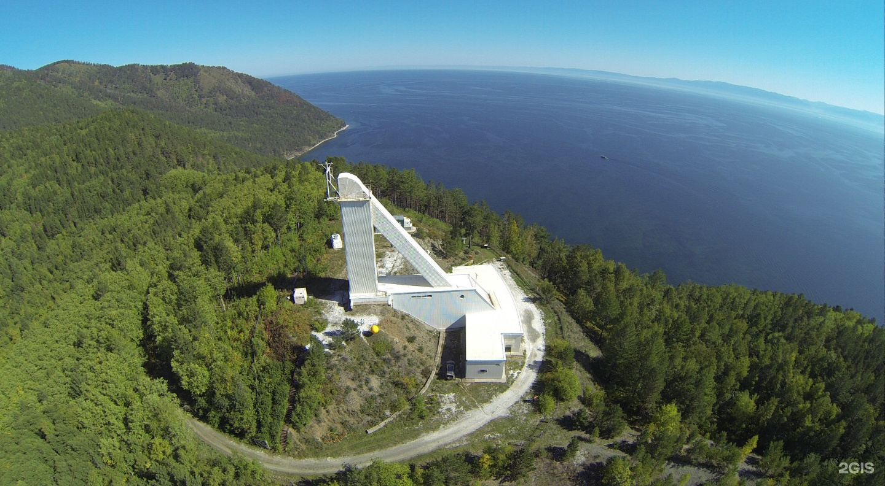

БАЙКАЛЬСКАЯ АСТРОФИЗИЧЕСКАЯ ОБСЕРВАТОРИЯ
1980
Выбирая место строительства, ученые рассматривали самые разные варианты. Но остановились именно на Листвянке. Здесь уникальные условия. Близость водяной линзы Байкала даёт высокую прозрачность воздуха. Над озером в среднем 224 солнечных дня в году. Сама обсерватория построена на холме, возвышающемся над Байкалом на 150 метров.
Всего в комплексе обсерватории шесть телескопов. Но главный, тот, ради которого всё и затевалось – Большой солнечный вакуумный телескоп (БСВТ). Когда солнечные лучи проходят через линзу, они нагревают воздух за ней. Так с помощью обычной лупы можно развести костёр. Но ровно тоже самое происходит и в телескопе, направленном в сторону солнца. Воздух в трубе телескопа нагревается, плывёт, вызывает искажения изображения. Поэтому было решено построить вакуумный солнечный телескоп. Так можно получать снимки без искажений. Самый большой в России и на всём Евразийском континенте вакуумный телескоп, наблюдающий за Солнцем, и построен в Листвянке. Внешне он похож на большую буку Л или на ученическую линейку-треугольник. Гипотенуза треугольника и есть сам телескоп. Его длина – 42 метра. Вся конструкция выкрашена в белый цвет, чтобы уменьшить нагрев поверхностей и, соответственно, уменьшить искажения данных. Этой цели на территории обсерватории подчинено всё. Именно поэтому белой мраморной крошкой посыпают даже дорожки вокруг телескопов.
Помимо БСВТ, в состав обсерватории входят два телескопа полного диска солнца, фотогелиограф и хромосферный телескоп. Все эти телескопы призваны наблюдать за тонкими структурами солнечных образований. Изначально результаты наблюдений фиксировались на фотоплёнке. Сейчас – на цифровых носителях и дистанционно.
Последний из построенных телескопов Листвянки – СОЛСИТ – Солнечный синоптический телескоп. Он позволяет отслеживать изменения магнитного поля по всему солнечному диску. Именно эти наблюдения позволяют синоптикам предупреждать людей о надвигающихся магнитных бурях. Так что наблюдения сотрудников обсерватории полезны не только для развития фундаментальной науки о звёздах, но и имеют вполне прагматичное применение.